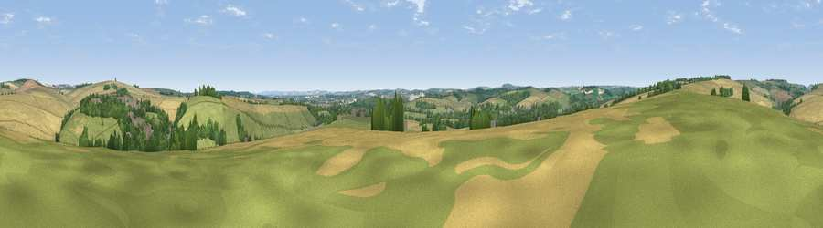

Viewpoint near Charlton Down
#25221 in England · top 58% of its area beats it · near Charlton DownWhere it is
The exact computed spot (SY 67075 94225). Click the marker for map links.
The view, rendered

A 360° render of this exact spot computed from the terrain model, tree cover and land cover — summer colours, afternoon light, calibrated against photographs of famous viewpoints. Real trees, hedges and buildings will differ in detail.
The panorama
Grey silhouette: terrain skyline in each direction (720 bearings, Earth curvature and refraction included). Dashed green: skyline with trees (+15 m) and buildings (+8 m) as obstacles. Blue strip: how far the ground is visible on each bearing.
Where the view opens
Wedge length = distance to the farthest visible ground on that bearing (vegetation-aware). Rings at 10, 25 and 50 km.
What fills the view
42% cropland · 39% grassland · 16% woodland · 3% built-up
Angular shares of the visible panorama (visual magnitude), not map area. Landscape diversity 0.49 (0–1 Shannon).
Key numbers
More beautiful places nearby
The staircase of upgrades: each row has a higher view potential than everything closer. Driving times are estimates from straight-line distance, calibrated against real road routing — check an actual route before setting out.
| Place | Direction | Drive | Score |
|---|---|---|---|
| Viewpoint near Piddlehinton | ENE · 4 km | ~9 min | 47.2 |
| Viewpoint near Godmanstone | N · 4 km | ~9 min | 54.1 |
| Viewpoint near Cerne Abbas | N · 7 km | ~14 min | 59.6 |
| Viewpoint near Cerne Abbas | N · 8 km | ~16 min | 59.9 |
| Viewpoint near Upwey | S · 8 km | ~16 min | 77.6 |
| Bincombe Down | S · 9 km | ~17 min | 78.6 |
| Viewpoint near Portesham | SW · 9 km | ~17 min | 82.7 |
| Viewpoint near Abbotsbury | SW · 14 km | ~25 min | 89.0 |
50.74669, -2.46804 · source: screening · position refined by local search. Computed location — check access rights before visiting.